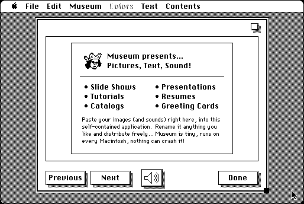

Download
Museum.1.1.zip (57K) Museum v1.1 repackaged into a zipped hfs disk image and checksum file. The disk image can be mounted with Mini vMac.
Museum.1.1.sit.hqx (74K) Museum v1.1 in the original format.
copyright: Rustle Laidman
mod date: Oct 12, 1995
license: shareware
last known url
(gone)
For creating simple standalone slide shows of images or text. A sound can be attach to each slide.

If you find these downloads useful, please consider helping the Gryphel Project, which hosts them.
Here are the md5 checksums for the downloads, signed with Gryphel Key 5:
--------- GRY SIGNED TEXT --------- 84ae64644a47ab27d4f401bdadec13fa Museum.1.1.zip 72aed82afb6035470174b8f8d6ccbdea Museum.1.1.sit.hqx ------- BEGIN GRY SIGNATURE ------- Gry/4Xa8CFcUzxdN/PUks0LVYEikWtrhXh4sJf0GjVNpg86U6Seuy3ue6Ujv0tF0 t5j2PsSmdTyFIEgTKfT/5XqU0Pp5eMgGjQo3dlz1d26AvXv9hxgPfd9xKp1Pjz6n hNzWrMFh5OS8cROs/GLGHm5mb9OSBlsnvX4BZZ7vOoIkqKGUn8EMsAOoHmEKE/gS -------- END GRY SIGNATURE --------